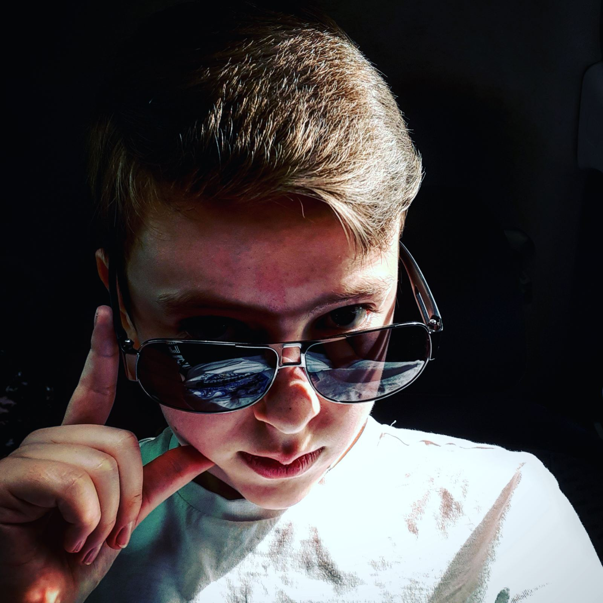
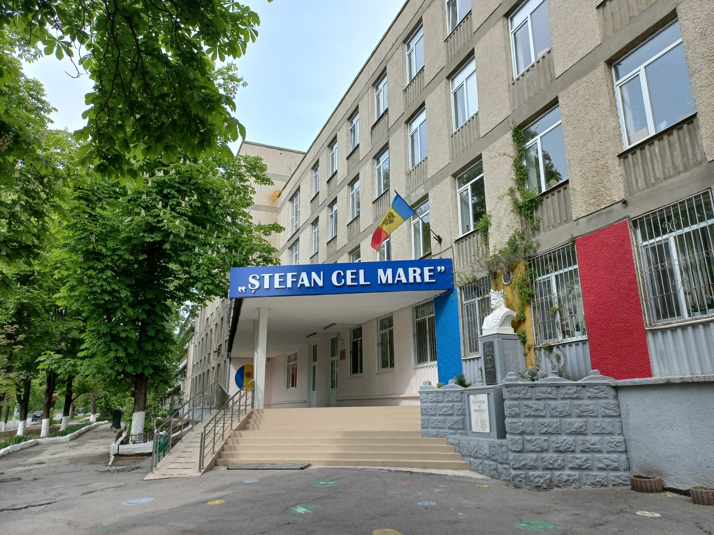
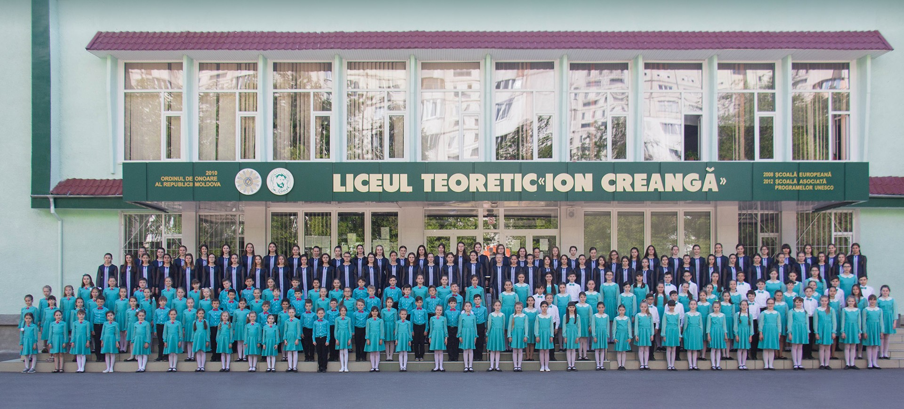
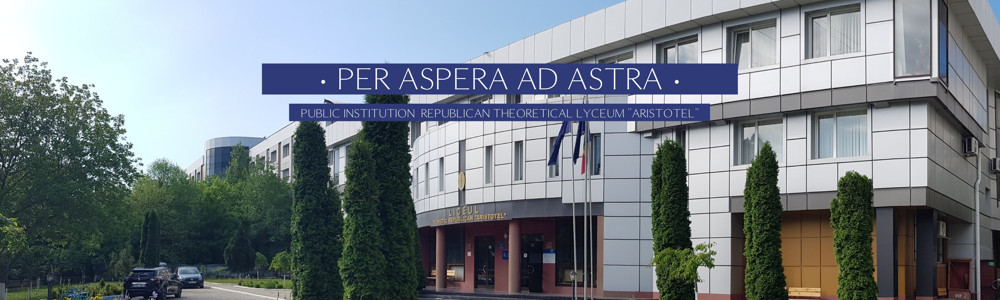

About Me

Hello! My name is Mîrza Damian. I was born in Chișinău, Republic of Moldova. I am a student at the moment, more information about that you can see in Education Section. I have been fascinated by Mathematics, Physics, Informatics and recently Astronomy. I express my interest by participating in different olympiads and competitions. Even if there is no competition for Quantum Physics in High School, I got really attracted to it, when I first time read about the Interpretation Copenhagen, Schrodinger's Cat and the EPR Paradox. I hope in my near future to get to a prestigious university and follow my dreams in Quantum Physics.Education
Primary School

I attended Theoretical Lyceum „Ștefan Cel Mare” middle school by putting a base in Mathematics, Romanian, Science, English and other main school subjects. For a start it wasn't a bad option, I would say it was one of the best options I had and by trying to accomplish myself I got the best scholar results between my colleagues. This was reflected in the awards I received:- 1st Place - 2017/2018 Comper Mathematics Competition
- Certificate of Participation - 2018 The 72nd Edition of the "Constantin Spătaru" Memorial Mathematics Competition
- 1st Place - 2018/2019 Comper Mathematics Competition
- Diploma of Merit - 2018/2019 "Gazeta Matematică Junior" Competition
Middle School

Afterwards, I finished my Middle School studies at Public Institution Theoretical Lyceum „Ion Creangă” where I developed my skills and found out some of my great passions like Mathematics and Physics. Between September 2019 and May 2024 I accomplished many and tried out many new things, including leadership skills within my class and community. This school was a step foward to my personal development and I am glad I had such opportunity. Nevertheless I achieved some impressing awards, such as:- Certificate of Completion - 2019 "The Hour of Code"
- 3rd Place - 2019 The 73rd Edition of the "Constantin Spătaru" Memorial Mathematics Competition
- Honorable Mention Diploma - 2021 The 10th Edition of the "Mihai Marinciuc" Memorial Physics Competition
- Honorable Mention Diploma - 2023 The 12th Edition of the "Mihai Marinciuc" Memorial Physics Competition
- Honorable Mention Diploma - 2024 Municipal Mathematics Olympiad
- Honorable Mention Diploma - 2024 Municipal Physics Olympiad
- Honorable Mention Diploma - 2024 The 13th Edition of the "Mihai Marinciuc" Memorial Physics Competition
High School

And the final step of undergraduate education, I am making it at Public Institution Republican Theoretical Lyceum „Aristotel” where I am getting ready for my future university life and professional career. There are many special things about this school, some of the greatest being: only 10th, 11th and 12th classes, compared to the rest of schools; also the ability to choose your school subjects you want study in depth and get rid of the troubling ones; compared to other school, it has one of the best developed democratic systems where the senate makes many events; and last but not least is the ammount of attention school gives toward volunteering. This was a great place to achive some new grounds and get new experience:- 2nd Place - 2025 Republican Astronomy and Astrophysics Olympiad
- Honorable Mention Diploma - 2025 The 14th Edition of the "Mihai Marinciuc" Memorial Physics Competition
- Honorable Mention Diploma - 2025 Municipal Mathematics Olympiad
- Honorable Mention Diploma - 2025 Municipal Physics Olympiad
- Honorable Mention Diploma - 2025 District Computer Science Olympiad
- ... and many more to come ...
Computer Science Projects
Until the time of the creation of this site, I did only one major project at Computer Science (at school), which was a site written in raw code with strict requirements. The site and the requirements can be downloaded below.
The Files are not public yet.
Scientific Thesis
Until the time of the creation of this site, there are no Scientific Thesis created, yet, but expect in the nearest future (until May 2026) at least one Scientific Thesis.
Resources
From 2024, as I started the participation in Olympiads I have found some great resources which helped me a lot. Sadly I didn't have enough time to finish reading all of them but hope for someone else it would be helpful. Please take in serious each message regarding copyright, to avoid any issues.
Astronomy
I have some amazing resources in Astronomy, one of which is quite hard to find.
First book is Star Charts 101 by Fahim Rajit Hossain Shwadhin. It is a great book with many stellar maps and you can find more practice mute maps on the github of this book here. It also has nice explanations.
PLEASE READ THE COPYRIGHT BEFORE YOU USE IT (CC BY-NC-SA 4.0)Next book is hard to find. Handbook of Space Astronomy and Astrophysics by Martin V. Zombeck is a Cambrdige book which has some rare informtation, but also gives some deep insights in the domain. Similar to the previous book
PLEASE READ THE COPYRIGHT BEFORE YOU USE IT.
Physics
This domain fascinated me and it determined me to find some of the best resources I could use in my personal development.
For start is the common Fundamentals of Physics 12th Edition by D. Halliday, R. Resnick and J. Walker. This book is the usual book you would like to start with by including all basis and demonstrations required to understand each topic. Please note that it has strict copyright rules and the edition is hard to find.
PLEASE READ THE COPYRIGHT BEFORE YOU USE IT (Sections 107 or 108 of the 1976 United States Copyright Act)Second book is Handbook of Physics by B. Yavorsky and A. Detlaf an old classic, soviet book which compared with contemporary books, is quite better. The special thing about it is the depth of the theory it goes including rare exceptions.
Mathematics
Here we have many resources from A to Z, but I got two favourites between all the books about mathematics.
First one is Mathematical Handbook Elementary Mathematics by M. Vygodsky which is very insightful having summarised all the content from addition up to complex numbers. Comparing with the curriculum in the Republic of Moldova, the book contains information from 5th class up to 11th class.
Second one is Mathematical Handbook Higher Mathematics also by M. Vygodsky but this time there are more information and is more in depth. If we make the same comperation again with the curriculum, this time it goes from 9th class up to 1st year of university or even more.
Computer Science
There are a few resources, especially about C++, because of that there are more sites that hold such information than books.
The only worthy book around there in Computer Science in C++ is the CSES book which holds some the most complex algoritms and explanations for each which is rarely found in any site, even ChatGPT.
In the whole internet there is one site which puts the basis to any computer science language you want, and that is W3School Website. There you can find easy, full tutorials for any language with step-by-step learning.